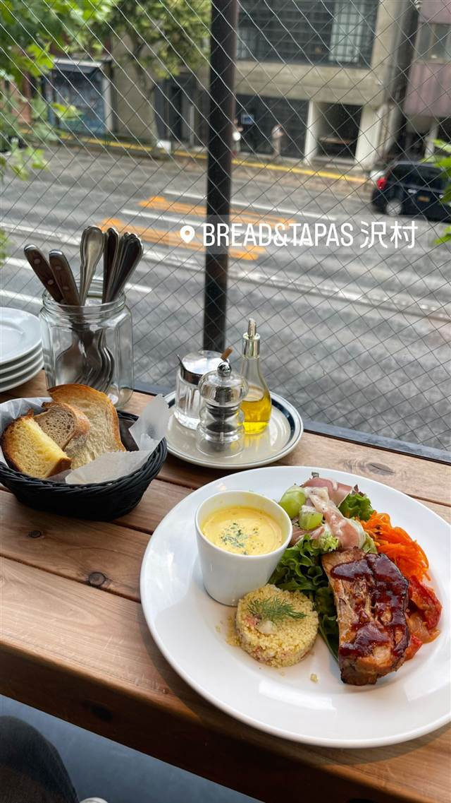

ブレッド&タパス 沢村 広尾（SAWAMURA）
軽井沢発祥、約30種の粉を低温長時間発酵させた焼きたてパン
BREAD&TAPAS 沢村
2009年に長野県軽井沢で誕生したベーカリー「沢村」の広尾店（2011年オープン）。約30種の粉を低温長時間発酵で仕込む焼きたてパンと、タパスなどの料理を一緒に楽しめる。
TRIVIA
豆知識
- 発祥は長野県・旧軽井沢のベーカリー
- パン作りに国内外約30種の粉を使い分けている
REVIEWS
世間の評判
3.60食べログ
パン屋ならではのモーニング
- パン屋ならではの美味しいパンを評価する声が多いとされている店
- 洗練された雰囲気の中でゆったりと過ごせる空間だという声が多い
- モーニングの時間帯はとくに混雑しやすい傾向があるという声も複数ある
- パンの香りが料理に移ってしまうことがあると指摘する声も見られる
食べログ 口コミ1099件
| 創業 | 2009年に長野県軽井沢で創業。広尾店は2011年オープン |
|---|---|
| 系譜 | 発祥は長野県・旧軽井沢のベーカリー&レストラン沢村 |
| 看板 | 焼きたてパンとタパス料理（ランチプレート） |
| こだわり | 国内外約30種の粉をパンの個性に応じて使い分け、低温で長時間発酵させて粉本来の旨みを引き出す |
| どこから | 都心 |
| 予算 | 昼 ¥2,000～¥2,999 夜 ¥5,000～¥5,999 |
| 定休日 | 無休 |
| 予約 | 予約可 |
| 場所 | 広尾 東京都港区南麻布（広尾・外苑西通り沿い） |
| メモ | 現在は軽井沢2店舗、東京駅新丸ビル、新宿ニュウマン、広尾、名古屋の計7店舗を展開 |
食べたもの：ランチプレート